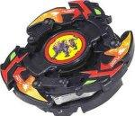

Flash Leopard 2
| Flash Leopard 2 | |
|  | |
| Number: | A-54 |
|---|---|
| System: | 5-Layer/Magnecore |
| Type: | Balance |
Contents
Name Variation
Flash Leopard 2 was released by Hasbro as Flash Leopard II.
Attack Ring (AR): Panther Head
Panther Head gets its name from the three panther heads which make up the AR. In Right Spin, Panther Head's protrusions provide some Smash Attack, albeit competitively ineffective, and are subject to a fair amount of Recoil. When used in Left Spin, Panther Head is used to its full potential, providing powerful Smash Attack with its three attack points. These small areas gain additional power due to the thicker panther heads that provide some extra weight, and while this causes some Recoil in Left Spin, Panther Head is not considered to be a particularly Recoil-prone Attack Ring. The three attack points also have slight slopes, which, while not useful for Upper Attack, show a noticeable ability to destabilize. Interestingly, Panther Head, when used in Smash Attack Customizations, is better used in combination with a Ten Wide Weight Disk than a Wide Defense or Wide Survivor Weight Disk. This is due to the rather limited range of the attack points. While this may be a drawback, it is greatly overshadowed by the excellent Smash Attack Panther Head delivers, and should still be considered when building a Left Spin Smash Attack Customization.
Use in Smash Attack Customization
This Smash Attack Custom showcases Panther Head's excellent Smash Attack when used in Left Spin.
- AR: Panther Head
- WD: Ten Wide
- SG: Neo Left Spin Gear (MW Core)
- SP: Defense Ring (Voltaic Ape)
- BB: Customize Grip Base (Dragoon V2)
Weight Disk (WD): Ten Heavy
See Ten Heavy.
Spin Gear (SG): Neo Right Spin Gear (North Magnecore Version)
See Neo Right SG.
Blade Base (BB): SG Metal Sharp Base
SG Metal Sharp Base is a very tall, wide and relatively rounded BB. It features a metal sharp tip, which provides very little friction between the Beyblade and the Stadium floor, and thus, high RPM. Unfortunately, the metal sharp tip is easily knocked off balance and toppled over. Its tall height makes it vulnerable to Upper Attack, again making it easily destabilized. The design of SG Metal Sharp Base is very Recoil-prone due to its protrusions, which also prevent significant LAD. These flaws make SG Metal Sharp a useless BB.
Other Versions
- Flash Leopard 2 ? Silver Version
Gallery
Overall
Flash Leopard 2 is comprised of a mixed array of parts: Panther Head is one of the top-tier Attack Rings for Left Spin Smash Attack, but other ARs such as Takara's Metal Driger, Dragoon G, or Driger G are both more cost-effective ARs and purchases; SG Metal Sharp is completely useless; Ten Heavy and Neo Right Spin Gear (North Magnecore) have some use in a variety of customizations. Overall, Flash Leopard 2 is definitely a good buy, but it is generally not worthwhile if one already has a competitive Smash Attack AR.